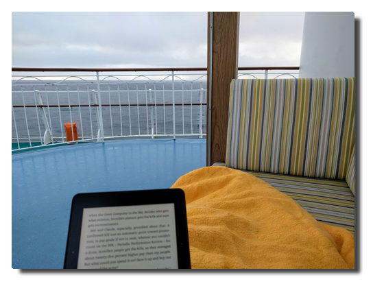

Die Deutsche Wohnen ist scheiße - und nun?
Inhalt
In Berlin hat die Unterschriftensammlung für das Volksbegehren mit dem reißerischen Namen "Deutsche Wohnen & Co. enteignen" a.k.a. Mietenvolksentscheid begonnen. Ich halte diesen Plan für ein wenig erfolgversprechendes und rachegetriebenes Unterfangen. [8] [9]
Auf Linie gebracht
Ich sitze in einem Seminar für Betriebsräte einer größeren Gewerkschaft und kurz vor dessen Ende wird ein Zettel ausgeteilt und eine Diskussion zum Thema "Das Grundgesetz feiert 70. Geburtstag! Wir feiern mit!", genau genommen zum Slogan "Eigentum verpflichtet", angekündigt.
Mein Verschwörungstheoriedetektor schlägt an, denn ich glaube nicht an Zufälle. Zunächst bin ich etwas fassunglos, bereite einen kleinen Rant vor, den ich auch vortrage und habe eine zivile Konversation mit meinen Mitmenschen im Raum.
Ausgangslage
Nicht nur der Berliner Wohnungsmarkt ist, wie es immer so euphemistisch ausgedrückt wird, angespannt.
Die Berliner Politik spielt dabei eine wichtige Rolle - sie hat diese Entwicklung in den letzten 30 Jahren munter befeuert.
Der Ausverkauf
Nach der Wende befanden sich 39 % der Ostberliner und 24 % der Westberliner, oder insgesamt etwa 482.000, Wohnungen in landeseigenen Wohnungsbaugesellschaften.
Am Ende der Nuller Jahre blieben davon noch etwa 250.000 (16 % aller Wohnungen) übrig. [7]
Die Ursachen darin liegen zum einen in der Privatisierung von Landeseigentum, zum anderen verringerte sich der gesamte Wohnungsbestand durch Abriss, Rückbau oder Umwidmungen, der soziale Wohnungsbau kam zum Erliegen.
Andere Faktoren, die zur Preis- und Mietsteigerung beitragen, sind hierbei noch gar nicht berücksichtigt - Anziehen der Kaufimmobiliennachfrage aufgrund niedriger Zinsen (siehe auch Finanzkrise), Gentrifizierungsentwicklungen, Umkehr des Bevölkerungsrückganges.
Die weitreichende Privatisierungen von kommunalen Wohnungen hatten einen kurzfristigen positiven Effekt auf den notorisch klammen Berliner Haushalt, aber diese Entscheidungen waren kurzsichtig und wir müssen heute mit den Folgen leben. [6]
Der Feind
Die Deutsche Wohnen SE ist Eigentümerin von 111.500 Berliner Wohnungen und damit größte Privatvermieterin. Vor der Wohnungskrise war die DW einfach nur ein Vermieter unter vielen und Wohnungen zu mitunter relativ leicht erschwinglichen Preisen mit Ladenbüros mit zahlreichen verfügbaren Wohnungen in der Auslage und im Gegensatz zu manch privatem Vermieter mit professionellem Abrechnungsmanagement (BTDT).
In den letzten Jahren ist die Deutsche Wohnen immer wieder mit Negativschlagzeilen in der Presse aufgefallen. Häufig geht es dabei um enorme Mieterhöhungen, das Ausbleiben notwendiger Instandsetzungsmaßnahmen, das Vertreiben von Mietern durch überzogene und rücksichtslos ausgeführte Modernisierungen und dergleichen.
Die Deutsche Wohnen macht es einem wirklich einfach, ihre Enteignung zu befürworten.
Die Enteignungsargumente
"Beim Straßenbau werden auch Privatleute enteignet"
Eigentum ist grundsätzlich gewährleistet und eine Enteignung "nur zum Wohle der Allgemeinheit" zulässig (Artikel 14 GG). Artikel 15 des Grundgesetzes räumt die Überführung von Grund und Boden, Naturschätzen und Produktionsmittel in Gemeineigentum ein. [1]
Das vielzitierte Beispiel, dass dies auch bei großen Bauvorhaben möglich ist, lässt sich mit einem "Ja, aber" ergänzen. [17] Im Baugesetzbuch heißt es nämlich auch
§ 87 (1) Voraussetzungen für die Zulässigkeit der Enteignung [16]
Die Enteignung ist im einzelnen Fall nur zulässig, wenn das Wohl der Allgemeinheit sie erfordert und der Enteignungszweck auf andere zumutbare Weise nicht erreicht werden kann.
Dies halte ich für eine vorhersehbare Argumentationslinie: der Berliner Senat wird in einem Verfahren, und die Deutsche Wohnen wird sich nicht widerstandslos enteignen lassen, vermutlich darlegen müssen, dass es sich hierbei um die letzte Maßnahme handelt, die ihm geblieben ist und alle anderen Mittel ausgeschöpft sind. Das wird schwer.
Es ist zudem extrem zynisch, enteignete Privatpersonen hier als Argumentationshilfe anzuführen.
Solche Verfahren ziehen sich in der Regel über Jahre dahin und die Betroffenen versuchen alles, um sich dagegen zu wehren bzw. das beste aus der Situation zu machen. Im Fall von Umsiedlungen ganzer Ortschaften etwa für den Braunkohletagebau war dies in der Vergangenheit mit großen, auch persönlichen Dramen verbunden.
Und diese werden nun als argumentative Schutzschilde hergenommen. Das ist so respektlos und niederträchtig, dass mir die Worte fehlen.
"Es betrifft nur Eigentümer mit mehr als 3.000 Wohnungen"
Mal provokant gefragt: Wie lange, meint ihr denn, wird es dauern, bis es lauter eigenständige Wohnungsunternehmen im Besitz von jeweils 2.800 Wohnungen geben wird?
Wie soll dies unterbunden werden und wie naiv seid ihr eigentlich?
Bremsen und Verbote
Die Berliner Politik hat angesichts der sich zuspitzenden Lage auf dem Immobilienmarkt in den letzten Jahren versucht, mit dem Gesetz zur Mietpreisbremse [10] und dem Zweckentfremdungsverbotsgesetz dagegen zu wirken.
Das Problem bei der Mietpreisbremse ist, dass sie sich leicht umgehen lässt [11] und das des Zweckentfremdungsverbots, also das Verbot des kurzfristigen Vermietens von Wohnraum als Ferienwohnungen, dass es schwierig zu kontrollieren und ebenfalls umgehbar ist. [13] [14]
Was im Ansatz richtig ist, erweist sich in der Ausführung als zäh. Zwar hat laut einer Untersuchung des DIW eine Verlangsamung des Mietanstiegs [12] und auch ein leichter Rückgang der Airbnb-Angebote stattgefunden [15], doch das Ergebnis kann nicht befriedigen.
Die Kosten
Der wunde Punkt - was kostet denn so eine Enteignung?
Grundgesetz Artikel 14 (3) [1]
Eine Enteignung ist nur zum Wohle der Allgemeinheit zulässig. Sie darf nur durch Gesetz oder auf Grund eines Gesetzes erfolgen, das Art und Ausmaß der Entschädigung regelt. Die Entschädigung ist unter gerechter Abwägung der Interessen der Allgemeinheit und der Beteiligten zu bestimmen. Wegen der Höhe der Entschädigung steht im Streitfalle der Rechtsweg vor den ordentlichen Gerichten offen.
"In aller Regel wird der Eigentümer mit dem Verkehrswert entschädigt, den sein Eigentum zum Zeitpunkt des Enteignungsbeschlusses hatte." [2]
Wenn man als Entschädigungsgrundlage einen derzeitigen Preis von 4.000 €/km² annimmt [3], bei einer durchschnittlichen Wohnungsgröße von 50 m², ergibt dies:
Selbst bei dieser vorsichtigen Schätzung von Wohnungsgröße und Preis kostet die Enteignung der Deutschen Wohnen allein über 22 Milliarden Euro.
Das sind 22 Milliarden Euro Kapital für die Deutsche Wohnen.
Das sind 22 Milliarden Euro, ohne eine einzige zusätzliche Wohnung geschaffen oder eine bestehende instandgehalten oder modernisiert zu haben.
Mit 22 Milliarden Euro könnte man im kommunalen und sozialen Wohnungsbau richtig was reißen.
Inzwischen liegt eine offizielle Kostenschätzung seitens des Senats vor. Diese kommt zu einer Annahme von 20 bis 40 Milliarden Euro, kreditfinanziert über 45 Jahre, für die in Frage kommenden über 200.000 Wohnungen. Die Initiative des Volksbegehrens rechnet hingegen mit nur 7,3 bis 13,7 Milliarden Euro. [18] [19]
Schlusswort
Die Wohnungsnot ist real und der Berliner Senat hat in dieser Sache nicht nur versagt, sondern vorsätzlich zur aktuellen Situation beigetragen.
Das große Verscherbeln kommunalen Eigentums trotz abzusehender Entwicklung (globale Verstädterung) und Einstellen des sozialen Wohnungsbaus, die schwach wirksame, weil leicht umgängliche Mietpreisbremse und ein de facto nicht durchgesetztes Zweckentfremdungsverbot für Wohnraum sind die vier großen Versäumnisse.
Nach so viel politischen Versagens ist mir völlig schleierhaft, wie man jetzt von genau dieser Institution einen Erfolg bei einem so heiklen Thema wie der Enteignung erwartet.
In diesem aktuell noch sehr hypothetischen Enteignungsverfahren ist völlig unklar,
- ob eine realistische Chance besteht damit durchzukommen [4] [5],
- wie lange dieses dauern wird,
- welche Kosten zu erwarten sind.
Die Deutsche Wohnen ist ein einfaches Feindbild, das Unternehmen tut viel, um seinem negativen Image gerecht zu werden.
Aber: es hat keinen Sinn, ein Exempel zu statuieren und einen Pyrrhussieg zu erringen.
Berlin hat die halbe Stadt verkauft und kauft sie dann wieder zurück, weil es den "Druck der Straße" gibt? Welch großartige Verhandlungsposition ergibt sich daraus für die Deutsche Wohnen? Kauft Deutsche Wohnen-Aktien!
Und das wird gefeiert?
Quellen
| [1] | (1, 2) Das Grundgesetz der Bundesrepublik Deutschland |
| [2] | Die Entschädigung für eine Enteignung |
| [3] | Immobilienpreise Berlin 2019 |
| [4] | stern: Verfassungsrechtler: Berliner Volksbegehren ist aussichtslos |
| [5] | Berliner Morgenpost: Enteignung: Der Faktencheck zum Volksbegehren |
| [6] | rbb24: "Berlin hat öffentliches Eigentum zu billig verkauft" |
| [7] | Berliner MieterGemeinschaft: Berliner Wohnungspolitik – Aktuelle Zahlen, Berliner Wohnungspolitik: Teil 1 – Die 90er Jahre, Berliner Wohnungspolitik: Teil 2 – Die rot-rote Koalition |
| [8] | Deutsche Wohnen & Co. enteignen |
| [9] | Mietenvolksentscheid |
| [10] | Mietpreisbremse: Regelungen, Änderungen, Ausnahmen |
| [11] | Der Tagesspiegel: Möbel statt Mietpreisbremse |
| [12] | Berliner Zeitung: So effektiv ist die Mietpreisbremse in Berlin |
| [13] | Der Tagesspiegel: Wie viele Ferienwohnungen sind schon registriert? |
| [14] | Berliner Mieterverein: Trick mit Kurzfristmietverträgen könnte nach hinten losgehen |
| [15] | rbb24: Dem Großteil der Berliner Airbnb-Gastgeber drohen Strafen |
| [16] | Baugesetzbuch § 87 |
| [17] | (PDF) Wie läuft eine Enteigung ab? |
| [18] | Der Tagesspiegel: Teure Volksbegehren in Berlin - Geld spielt keine Rolle |
| [19] | Der Tagesspiegel: Enteignungen: Aktivisten rechnen mit Kosten von 7,3 Milliarden Euro |
NoN: v0.7 release
Search and Popovers
The latest release of my GTK+ client for Nikola features a brand-new search function and some GUI enhancements.

NEW: search function
This is quite self-explanatory: you can find strings in posts, pages and listings.

NEW: Popovers
All menus and context menus are GtkPopovers or GtkPopoverMenus now to follow the guidelines and for a better desktop integration. Popovers do not extend the main window's dimensions like menus sometimes do. They look better as they are larger and point to their parent widget/origin (so right-click context menus do not appear kind of 'lost' on the screen anymore).

There is also a new Popover hiding behind the "Status" button which displays the output of nikola status.
This helps to show and resolve errors and warnings which may occur p.e. due to Nikola upgrade.

Changelog
-
Fixes:
- all issues regarding non-flat file structure
- get paths and extensions for posts and pages from conf.py so files are shown that are stored aside from the default folder structure
- remove tags/categories with zero occurences
- quit preview if other menu items are clicked
- return from console to main window after command execution is done
-
New:
- search function: find strings in posts, pages and listings
- menu button to open application config file
-
Updates:
- all menus are Popovers/PopoverMenus now
- localization strings
- screenshots
Love Boat - The Real Story. Seetag
Tag 14. Heimkehr
Seetag
 |
|---|
| Deck 11 mit Joggingparcours (rutschfest) |
Die letzte Gelegenheit für Verabschiedungen und Seekrankheit. Ich drehe die übliche Morgenrunde und mache noch ein paar GoPro-Aufnahmen. Es ist seltsam anmutende Gewissheit, dass man die Leute alle nie wieder sehen wird, aber ich bin auch froh, endlich mal wieder meine Ruhe haben und meinen eigenen Rhythmus leben zu können.
Das Deck ist gegen Mittag völlig überfüllt. Alle sitzen in Decken gehüllt draußen und genießen die Sonne. Dazu gibt es mal wieder eine Pooldeckaktion, das heißt, es wird gefressen und einer der sympathischeren Unterhaltungsbeauftragten, René, moderiert routiniert weg, was gerade anliegt, in diesem Fall irgendwas mit Wichtelgeschenken.
Auch wenn ich auch gern noch etwas Sonne genossen hätte, treibt mich die Masse an Menschen zunächst erstmal ins Innere. Da wird sich doch nicht gerade ein kleiner Lagerkoller in meinem Kopf ausbreiten? Ach nein, ich bin einfach nur regulär genervt über jeden und alles und überhaupt war die Reise mindestens zwei Wochen zu kurz!
Am Abend kippen wir noch die Flasche Prosecco, die sich K. und M. am zweiten Tag ertanzt haben und die Mädels anschließend noch ein letztes Getränk in der AIDA Bar.
Abschied
 |
|---|
| Heavy load. |
Am Morgen herrscht geschäftiges Treiben überall. Jeder musste früh raus, das Gepäck wird in den Gängen eingesammelt, ein letztes Frühstück, ein letzter Kaffee in der AIDA Bar, während wir auf die Gepäckfreigabe warten.
Als wir von Bord gehen, kommen uns schon die nächsten entgegen. Es wird geladen - Menschen, Ladung, Treibstoff - heute abend geht es wieder los.
Epilog
M. fährt mich nach Hause. Es ist Samstag Mittag und Berlin ist auf den Beinen. Es hupt. Ach ja, Berliner Straßenverkehr: Platz da, hier komm icke! Ich laufe die letzten paar Meter bis zur Haustür, sehe ein paar Gestalten in Hochwasserhosen und übergroßen Filzmänteln. Mein Gehörgang wird ohne Vorwarnung getroffen von dem dämlichen, lauten "you know, you know...like, like, you know"-Englisch der kaliformischen Expats. Was hab ich es vermisst...
 |
|---|
| This is the end. |
Heute Abend gibts Schawarma von Al Safa. Dann schreibe ich meinen Reisebericht und danach warten 75 GB GoPro-Material auf ihre Sichtung.
Ha det bra!
Love Boat - The Real Story. Bergen
Tag 13. Die Stadt des Regens
 |
|---|
| Boot und Bergen |
Bei schönstem Sonnenschein fahren wir langsam in die Fjorde ein und legen gelassen in Bergen an. Wir haben nur ein paar Stunden Aufenthalt und da die jeder so gut wie möglich nutzen möchte, stürmen die Passagiere fluchtartig von Bord, sobald auf Deck 3 die Planke ausgefahren ist.
 |
|---|
| 11th deck is best deck. |
Regenfakten
Wie ist das denn jetzt mit dem Regen in Bergen? Einerseits heißt es, Bergen wäre die regenreichste Stadt Europas, dann wieder erzählen reproduzierbar Guides, darauf solle man nicht so viel geben, in Halle (Saale) würde es ja viel mehr regnen. Ja was denn nun?
Regentage und Regenmenge
In Bergen regnet es häufig. Auch wenn es in anderen europäischen Städten vergleichbar häufig oder gar an noch mehr Tagen im Jahr regnet, es regnet dann auch noch viel.
Bergen ist mengenmäßig die regenreichste Stadt Europas und damit zehntregenreichste Stadt weltweit. Die durchschnittliche Niederschlagsmenge beträgt 2.250 mm pro Jahr. Andere regenreiche Städte wie etwa Glasgow kommen mit mehr Regentagen (etwa 260) auf gerade mal etwas über 1.000 mm Niederschlagsmenge.
Wie ist das denn jetzt mit Halle?
Regen verhält sich zu Halle wie Spinat zu Eisen. Einmal hat sich irgendwo eine falsche Zahl eingeschlichen und zack: für immer im Regen stehen. Dass Halle die regenreichste Stadt Deutschlands oder gar Europas sein soll, erweist sich nach kurzer Suche als eine klassische Falschmeldung.
Die Quelle dieses Gerüchts ist vermutlich diese Statistik aus dem Jahr 2004, in der Halle a.d. Saale alle Städte der britischen Inseln hinter sich lässt und das, obwohl sich die Stadt im Regenschatten des Harz befindet. Sowohl die Anzahl der angeblichen Regentage stimmt nicht, auch die Regenmenge ist mit unter 500 mm pro Jahr deutschlandweit unterdurchschnittlich.
Today I learned:
Bergen IST die regenreichste Stadt Europas und wer das von Halle an der Saale behauptet, ist Fakenews aufgesessen!
Links
- Mitteldeutsche Zeitung: Hartnäckiges Gerücht Halle ist angeblich die regenreichste Stadt Deutschlands
- statista: Europäische Städte mit den meisten Regentagen im Jahr 2004
- statista: Die regenreichsten Städte Deutschlands
- [w] wie wissen: Regenmythen
- Wikipedia: Bergen (siehe Klimatabelle)
- [Wikipedia: Halle (Saale) (
- TOP 10 der regenreichsten Städte der Welt
- holiday-weather.com: Glasgow avarages
 |
|---|
| Auch mal nach unten schauen... |
Fløyen
Mein gebuchter Ausflug wurde abgesagt. Für den geplanten Spaziergang auf dem Fløyberg hatten sich nicht genügend Leute gefunden. Damit habe ich eine Ausflugsquote von 1:3. Die Nordkapbesichtigung hatte glücklicherweise geklappt, die Trollfjordbootsfahrt leider nicht, da wir Sortland nicht anfahren konnten und nun das.
Eine kurze Recherche später entschließe ich mich dazu, den Fußmarsch einfach allein auf mich zu nehmen (Walk like a Norwegian up Floyen in Bergen). Ich laufe also los Richtung Innenstadt, ein wenig ziellos hin und her, um dann grob in Richtung Berg eingzuschlagen. Das ist auch nicht allzu kompliziert, da Bergen von sieben Hügeln umgeben ist, es also in jede Richtung irgendwo nach oben geht.
 |
|---|
| *Nur echt mit Möwe: Denkmal dem Dichter Ludvig Holberg zu Ehren. |
Ich schlage also einen südöstlichen Wanderweg nach oben ein und auf halber Strecke fällt mir ein, dass ich eine wirklich gute Gelegenheit verpasst habe, Strava anzuwerfen. Irgendwann treffe ich auf den offiziellen Weg nach oben, auf dem viele Menschen in beide Richtungen unterwegs sind. Manche behaupten, ich hätte einen ziemlich schnellen Laufschritt. Diese Leute haben noch keine Norweger laufen sehen. Generell habe ich in der letzten Woche so viele Leute Hügel hoch- und herunterjoggen gesehen, dass ich zu der Überzeugung gelangt bin, dass die Norweger ein sportbesessenes Volk sind. Hört auf, so fucking sympathisch zu sein, sonst komme ich wieder!
Ankes Tipp
Der Spaziergang hoch zum Fløyberg erfordert passendes Schuhwerk und ein wenig grundlegende Kondition, es sind schließlich 320 Höhenmeter bis zur Aussichtsplattform. Man sollte etwa 1,5 Stunden für den Aufstieg einplanen. Da, wenn man nicht auf einer ausgeschilderten Route unterwegs ist, gelegentlich in Sackgassen landet, ist es hilfreich, eine Karten-App zur Hand zu haben.
 |
|---|
 |
 |
| Jump around. 1004 km bis Berlin, 3 m bis zum Raucherbereich. Hanggrün. |
Bye bye, Bergen
 |
|---|
| Der Sonnenuntergang macht Drama. Ja, ich möchte auch gern noch bleiben... |
Am Abend verlassen wir Bergen und es manifestiert sich die Gewissheit, dass wir nun fast schon zu Hause sind. Wir gehen in die Bar und später für etwas Frischluft an Deck. Am Horizont winkt uns ein letztes mal schemenhaft das Polarlicht zum Abschied zu. Genug mit dem Kitsch jetzt.
Love Boat - The Real Story. Bye Trondheim
Tag 12. Trondheim
Da mein Strava-Spaziergang dann doch optisch nicht so der Brüller war (wir waren einfach zu schnell), wollte ich das heute während des Liegens im Hafen mit einer Laufrunde nachholen. Doch ich hatte die Rechnung ohne die gesperrten Decks gemacht. Gut, dann schaue ich mir eben das triste Trondheimer Hafengelände an, macht ja auch nichts.
Souvenirjagd
Nach dem Frühstück geht es erneut in die Stadt. Ich drehe noch eine große Runde auch hoch zur Kristiansten festning, von der aus man angeblich einen großartigen Blick auf die vorgelagerte Insel Munkholmen mit seinem ehemaligen Kloster/Festung/Gefängnis. Falls man nur deswegen dort hoch geht, kann man sich das sparen, vom Schiff aus hatte man einen Premiumblick in dieser Hinsicht.
Als Souvenirshop habe ich einen Laden der Supermarktkette Rema 1000 auserkoren. Ich kaufe mehr Brunost, Lefsegodt und Tubenkäse, so viel ich tragen kann. Ich meine, ein Grinsen im Gesicht der Kassierin gesehen zu haben. Du må ikke dømme meg, jeg trenger bringe suvenirer til venner mine tilbake i Tyskland.
 |
|---|
| Souvenirs |
Gegenteiltag
Ein Typ fährt mit dem Rad vor den Supermarkt, steigt ab, lehnt das Rad an und geht hinein. Mein Gehirn kann das nicht verarbeiten.
 |
|---|
| WTF |
Alle an Bord
Um 14 Uhr soll es weitergehen nach Bergen, doch durch den starken anlandigen Wind ist es uns nicht möglich abzulegen. Angesichts der vergangenen Tage unken die ersten bereits, dass auch Bergen für uns wohl ins Wasser fallen würde. Gegen 16 Uhr erwischt die Brücke das langersehnte kurze Abflauen des Windes und wir sind frei und werden voraussichtlich pünktlich in Bergen ankommen.
 |
|---|
| Sind wir noch da? |
Geh mir weg
Auf einem Kreuzfahrtschiff wird man mit verschiedenen Grenzen seiner Komfortzone konfrontiert. Da wäre zum einen die offensichtlichste: Wasser. Davon abgeleitet ergibt sich die zweite: die Einschränkung der Bewegungsfreiheit. Ebenfalls eine Folge daraus ist der Überdruss an den anderen Menschen. Dieser Zustand hat sich glücklicherweise erst in den letzten Tagen der Reise bei mir eingestellt.
Als Passagier hat man im Gegensatz zur Crew viel Freizeit. Aber korrektes Freizeiten will gelernt sein. Neben dem physiologisch inaktiven Freizeiten wie lesen, zuhören, schauen und essen bleibt noch das Yang, das physiologisch aktive Freizeiten. Dies ist limitiert auf das Sportstudio und das Herumlaufen auf dem Schiff. Der Mensch ist rundherum ein Gewohnheitstier und so adaptierte ich schnell gewisse Gewohnheiten. Aber nicht nur ich.
The Hunger Game
Ein Grund für den exzessiven Bewegungsdrang ist die bis auf kurze Pausen vorhandene Präsenz von Essen. Man möchte annehmen, dass dies aufgrund dieser Umstände eine periphäre Angelegenheit wäre. Zu meiner Überraschung ist dem nicht so. Ab 7 Uhr gibt es Frühstück, ab 6:45 Uhr sammeln sich Leute vor dem Restaurant. Ab 11:00 Uhr gibt es eine Themenaktion auf dem Pooldeck und das Pooldeck ist voller Menschen, die nach dem Themen-Snack anstehen. Um 12:30 Uhr öffnen die Pforten zum Mittagessen, ab 12:15 Uhr stehen Leute vor dem Restaurant. Gegen 12:20 Uhr leert sich langsam die bis dahin vollbesetzte AIDA Bar, ergänzt durch Durchlaufverkehr in Heck-Richtung. Dasselbe findet noch einmal um 18:00 Uhr statt. Ebbe und Flut. Dazwischen grast der Heuschreckenschwarm noch Kaffee und Kuchen im Calypso ab (siehe Tag 2). Sind das eigentlich immer dieselben Menschen, die ganz offensichtlich mehrmals täglich kurz vor dem Hungertod stehen?
Aus dieser Beobachtung bzw. Erfahrung folgt auch, dass sich das Zeitfenster der Nahrungsaufnahme absurderweise immens verkleinert, wenn man zum einen einen Sitzplatz bekommen möchte und zum anderen zur Stressvermeidung (wir sind schließlich im Urlaub hier) einem großen Andrang am Buffet entgehen möchte.
AIDA-Feedback
Ich weiß nicht, ob man diesen Konflikt auflösen kann, schließlich kann man die Menschen nicht ändern. Aus persönlicher Sicht und ohne die Erwartungshaltung meiner Mitreisenden zu kennen, würde ich behaupten, dass das Kaffee- und Kuchen-Buffet und die Poolaktionen am Tage überflüssig sind.
Love Boat - The Real Story. Trondheim
Tag 11. Vakker byen
Wir sind seit eineinhalb Tagen auf See und das Schiff wird kleiner. Gerade bei schwerem Seegang ist die Bewegungsfreiheit stark eingeschränkt, weil dann die Außendecks zum großen Teil gesperrt sind (Deck 6 und 11, Deck 10 nur ein paar Meter neben den Türen zum Luft schnappen offen). Morgens schwinge ich mich also in das Hamsterrad auf Deck 9 und nach der verdienten Dusche noch auf einen Morgenspaziergang nach draußen. Also: - aus der Kabine raus, eine Etage nach oben laufen, Staubsaugercrew grüßen - auf Deck 6 raus und eine Runde herumlaufen (oder zwei), die Außendeckwartungscrewleute grüßen (halten die mich inzwischen für bescheuert?) - die Treppe am Heck nehmen, an der Ocean Bar vorbei, andere Seite weiter nach oben, am Calypso auf Deck 9 vorbei und weiter nach oben - Deck 10, die Raucher bei Morgenkippe und -kaffee grüßen, einmal am Pooldeck rum, Aufräumcrew grüßen (halten die mich...?) - Treppe nach Deck 11 nehmen, mindestens zwei Runden drehen mit Abstecher nach Deck 12 - das Ganze wieder zurück Wie ein Knasti auf Hofgang.
Am Abend machen wir endlich in Trondheim fest und werden bis zum frühen Nachmittag bleiben. Der stürmische Seetag hat alle landhungrig gemacht und so entern nach dem Abendessen Scharen von Passagieren und einige Leute von der Crew die fast leere Stadt.
 |
|---|
| Nidarosdomen |
Wo sind wir hier eigentlich?
Wir gehen Richtung Innenstadt, vorbei am illuminierten Nidarosdomen, über Brücken und hin und her. Seltsam erscheint uns die Vertrautheit der Stadt. Während bisher die Ort- und Landschaften sehr andersartig waren, erinnert Trondheim im Stil straßenzugweise mehreren von uns unabhängig voneinander an die Stadt Potsdam. Es ist so seltsam, dass wir an manchen Stellen stehen bleiben und völlig verblüfft sind. Davon abgesehen, dass Trondheim und Potsdam keine direkte Verbindung miteinander haben, gibt es doch einige Parallelen, die dieses Trugbild und die Konvergenz bei der städtischen Entwicklung fördern: * beide Städte sind quasi gleich alt * sie sind vergleichbar groß in der Einwohnerzahl * sie sind von viel Wasser umgeben * sie verfügen über ein Straßenbahnnetz * sie gelten als Kulturstädte * Trondheim war lange Hauptstadt des Landes, Potsdam offizielle Residenzstadt des Königreich Preußen
 |
|---|
 |
| Trondheims nette Ecken |
Absacker
Nach der Rückkehr zum Schiff machen wir Pläne für den nächsten Tag und verabreden uns in der AIDA Bar. Die Schiffsband spielt Klassiker mit Crewmitgliedern und wir trinken Bier. Ich habe den Trollfjord schon vergessen.
 |
|---|
 |
| Tagesplaner im Bordportal und tägliche Info in Papierform |
Love Boat - The Real Story. Tromsø
Day 8. Tromsø rain, Tromsø rain
At noon we arrive the ports of the largest north-Norwegian city Tromsø where we will be staying for a whole day. Our berth is some distance from the city centre so we can use a bus shuttle set up by the travel business.
 |
|---|
| Signal! |
I walk through the city and of course also cross the tromsøbrua (Tromsø bridge) to the Ishavskatedralen (Arctic Cathedral).
It is raining at temperatures broadly above freezing point and the compacted snow has transformed into thick ice tiles by repeated thawing and freezing that are now defrosting. One now walk on water covered ice shells surrounded by deep pond-like puddles permanently fed by thawing water. In the evening my shoes are completely soaked through.
The previously postponed Arctic circle baptism ceremony is held at the AIDA bar. This activity makes me have a premonition of the 'Ballermann' nature of these swimming club vacations that common cruises use to be. I take the next chance to nope out of it.
A part of our travel party attends a concert at the Arctic Cathedral but I go to bed early
 |
|---|
 |
 |
| Quite pleasent around here and other shipping companies also have nice ships (Yes, that is the "Viking Sky"). |
Day 9. Sortland calling
It is raining. We are still moored in Tromsø and I am out for a walk in the city buying postcards that I will dispatch at the next stop. It is raining.
We finally depart to destination Sortland. I spend the afternoon drinking coffee, solving crosswords and writing postcards. Best holiday ever.
Day 10. A storm is coming
My land excursion to the fascinating Trollfjord is going to start at 8 o'clock so the alarm clock rang early. There are only a few others having breakfast this early, some also booked the Trollfjord boat trip. Around 9 o'clock it becomes certain: there will be no Trollfjord. There will be no Sortland.
Due to heavy swell and wind there is no chance to dock in Sortland. Plans are officially changed in the course of the morning. We will spend another day on the sea and head directly to Trondheim. The ship is rolling through the Atlantic ocean and demands plenty of victims holding out in their cabins. Free seats at the bars.
I'm getting into a slightly sentimental mood. More than half of our travel lies behind us, we are heading south, only two stops ahead before we are going on a last day on the sea back to Hamburg.
My brain cannot completely process the fact yet that in a few days after being together with hundreds of people for two weeks chances are close to zero to see anybody of these ever again. The guests are going home and continue their lives as before and the staff will be seeing the next faces for two weeks and continues to do what they have done before which is working their asses off (Kudos to all of you).
Thinking about this it appears even more bizarre watching befriending attempts among guests towards crew members. How does that work? Are these people on cruises that often that they meet the same staff all along? Working in service myself I know this kind of behaviour. Of course some people are more sympathetic than others. So up to a certain degree you are willing to communicate on a more informal level without crossing the line of professionality doing so.
On a cruiseship the situation is completely odd. As a guest this may be the journey of my life and every single day is just awesome. For other guests you may be the annoying neighbour with a strange dialect or the nice random conversional partner on your daily morning walk on deck. For the crew you are the one spreading the clothes on the cabin's sofa, roaming through the early morning across the ship and ordering Ipanemy without sugar and drinking even more espresso at the bar. Til the next ones arrive.
Love Boat - The Real Story. Honningsvåg
Day 6. The end of the world
The past days make me sleep until 7 o'clock. We will be at sea until the evening and stay overnight at the port of Honningsvåg.
After the stunning previous experiences everybody is in high spirits. There are currently no seasickness casualies in our small tourist group. Even our youngest member seems to have adapted to life on the boat, he is high-fiving staff at breakfast and makes an appointment to the Kids Club later.
 |
|---|
| Circumnavigating the North Cape in mystic lights |
In the afternoon we pass the North Cape during sundown. There is clear sight and one can see the North Cape hall and the globe from afar. Stunned in fascination I'm standing on deck 6 for almost an hour and enjoy the sight.
Later it gets windy and starts snowing. The nightly excursions to the North Cape are canceled, the road is not opened because of the weather conditions. It is still uncertain if the excursions will happen tomorrow.
K. and me roam through the empty, sleepy Honningsvåg. We take a closer look at the ship and discover: the crew night club is located right behind our cabins. Well, that explains a lot...
 |
|---|
| Honningsvåg covered in snow. A ship. |
Then green haze. Polar lights. As we return to the ship the show is just starting. Green, even a few red northern lights are dancing in the sky for hours.
 |
| Not all heros wear capes. [Bamse, the canine war hero.](https://en.wikipedia.org/wiki/Bamse_(St._Bernard) |
Day 7. North Cape
Two perfect polar lights cruise days are behind us. Anything upcoming is just decoration on the cake.
We get ready for the land excursion to the North Cape which we had already seen from the ocean side just yesterday. It was cold and windy up there but the sight was clear and the place definitely worth the visit even without midnight sun.
 |
|---|
| Hilsener fra Nordkapp! Tourist level over 9000! |
In the evening the swell is getting stronger again and so I enjoyed the rest of the evening at the AIDA Bar.
 |
|---|
| It's all so terrible... |
Love Boat - The Real Story. Bodø
Day 5. Land in sight
The day starts with an early workout. When the ship is close to the second harbour Bodø we are presented with a breathtaking panorama view. This day promises to become great.
 |
|---|
| Postcard motif |
After the last, turbulent night the passengers cannot wait to leave the boat. Excursion busses are standing right in front of the ship and our little tourist party prepares for the usual walk into the town.
We were "warned" in advance by other passengers that Bodø is such an ugly town. The cause of that condition is their almost complete destruction in an air strike by the German Luftwaffe in 1940. Many houses have been replaced by more untraditional buildings and therefore the central pedrestrian area looks similar to their German counterparts.
In a travel report I read afterwards the author was downright outraged to have been forced to stop at this unsightly place. This really has made me angry: so do you want to experience the country or not? Norway like the rest of the world is no fairyland and has more to offer than beautiful landscapes and overpriced sledge dog trips for tourists.
If you open your eyes a little you can discover interesting sites even in Bodø like the local pieces of streetart.
 |
|---|
| Streetart: "Malstrøm" by David de la Mano |
On our exploratory walk I spot a supermarket - it's time to prove my Norwegian language skills and buy some local specialities: brunost (brown cheese) and lefsegodt (soft pastry with a kind of cream cheese).
 |
|---|
| A German walks by a Norwegian kiosk. Hitler. ROFL. (slightly out of focus) |
In the afternoon I go for a walk again, enjoy the unbeknown surroundings just to be back on board in time for dinner.
 |
|---|
| Pretty corners in Bodø |
Cast off, we are sailing north!
Anke's anecdotic tip
I love walking around but from the third day on I missed riding my bike. It somehow crossed my mind: You should have taken a folding bike with you. Each passenger can check in with two large pieces of luggage. If you get along with one like me it should not be problematic to take an adequately packaged folding bike (± 12 kg) on the trip. That would significantly increase the range of motion on land.
The night of nights
The evening starts quiet. This will change within a short period of time. Since experiencing the difficult weather conditions on the second day we have become addicted to the ship's own local web page - the bord portal - where you get information about speed, course, weather conditions and everything that happens on the ship. We are well-informed.
K. is stunned: she spotted green haze on the picture of the bow cam. M. is sent upstairs to evaluate the situation. I'm still doubtful but about to wrap up warm. We enter deck 11 which is already slightly crowded with some people and their expensive photo equipments. The sky is cloudy and the almost full moon is illuminating the ocean's surface and land masses of the Lofoten islands. This alone creates a breathtaking, mystical atmosphere.
People whisper and watch on each other's camera displays and suddenly somebody says "There it is." We stare into the sky and see: nothing.
We keep staring and start seeing the difference between clouds illuminated by the moon and diffuse haze. Yes, the hazes are greenish and slightly moving. So this should be it?
We remain outside in this winter night staring into the night sky. The clouds slowly dissolve. The weather forecast predicts lots of clouds and rain for the next days and somebody says "Tonight's the night of nights."
Deck 11 has awoken. The news of polar lights sightings are transmitted into steel Moby Dick. There is lively movement of people going in and out.
Tonight the sky is giving us the green light. Freezing and excitement - the loyal companions of the northern lights - stay with us until 2 o'clock in the morning.
What a great day.
Love Boat - The Real Story. Seetag
Tag 4. Ahoy!
The morning pulls me outside and I go for a pre-breakfast walk on deck. There is already coffee for the early birds at the Anytime Bar. I'm greeting the loafing smokers while passing them. Armoured with book and covered in blankets I occupy a beach sofa on deck 11 after breakfast. It is windy, cloudy, somehow nice but still quite cold.
|  |
|---|
| The 'Yellow Blankets' are demonstrating for more relaxing and better weather |
The weather is getting worse and so I'm looking for a quiet place inside in the early afternoon. This proposition turns out to be not as easy but the AIDA bar is slowly becoming a regular residence. I am so inactive that I skip lunch. Also I'm getting a bit petulant. In the afternoon there is finally some edutainment to attend and I book the excursion to the Nordkapp.
A tourist does what a tourist has to do.
More weather
Our ship is accompanied by two low-pressure areas. A high-pressure area over central Europe causes spring-like temperatures in the German homeland but also a huge airmass exchange between these three meteorological phenoma. As a bonus the low-pressure area over Iceland is greeting us with foaming waves over the Atlantic ocean.
Short: We are caught in a storm with some respectable swell. A lot of it.
What's also there a lot of: much space at the dinner restaurants and the bars. One prancels through the familiar, staggering ship. The evening entertainment programme was delayed to the next day and the decks 6 and 11 are completely closed for safety reasons.
Anybody who isn't seasick spends the time playing games and chilling in the bars while dreaming of tomorrow's shore leave Bodø.
Orga
A not so very polite opportunity to spend your time on a staggering ship is to watch the staff work.
After a few days you notice some patterns: they always work (12+ hours) and mostly at the same positions. Going for a walk or run in the morning you recognize the guy open the pool bar. The same guy makes you a coffee three hours later and a beer in the evening. I bet this real nice Indian guy does a shift at the crew night club afterwords. Maybe this guy is a vampire...? Same for the restaurant staff. The guys you are greeting at breakfast, you are greeting at dinner again.
And all of them are so damn kind all of the time. I really hope they are getting paid appropriately, otherwise I could not go on a journey like this again...
 |
|---|
| Daily staff carousel of the star-shaped AIDA Bar |